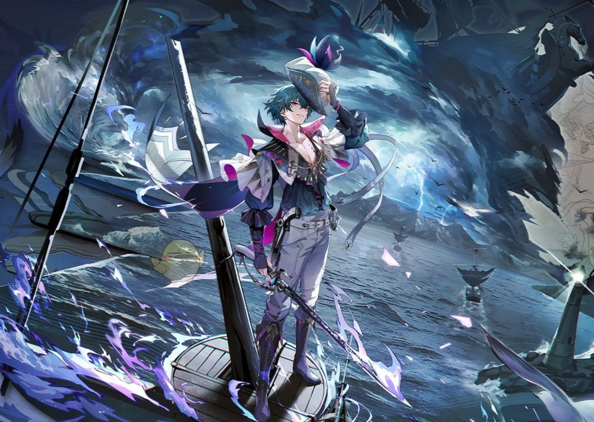
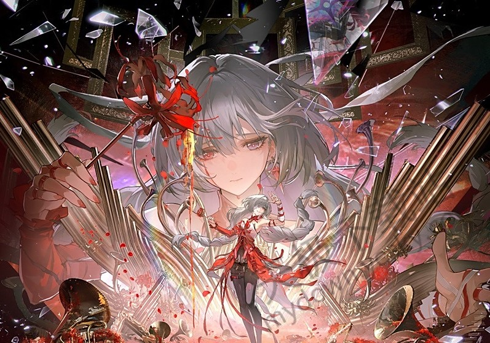
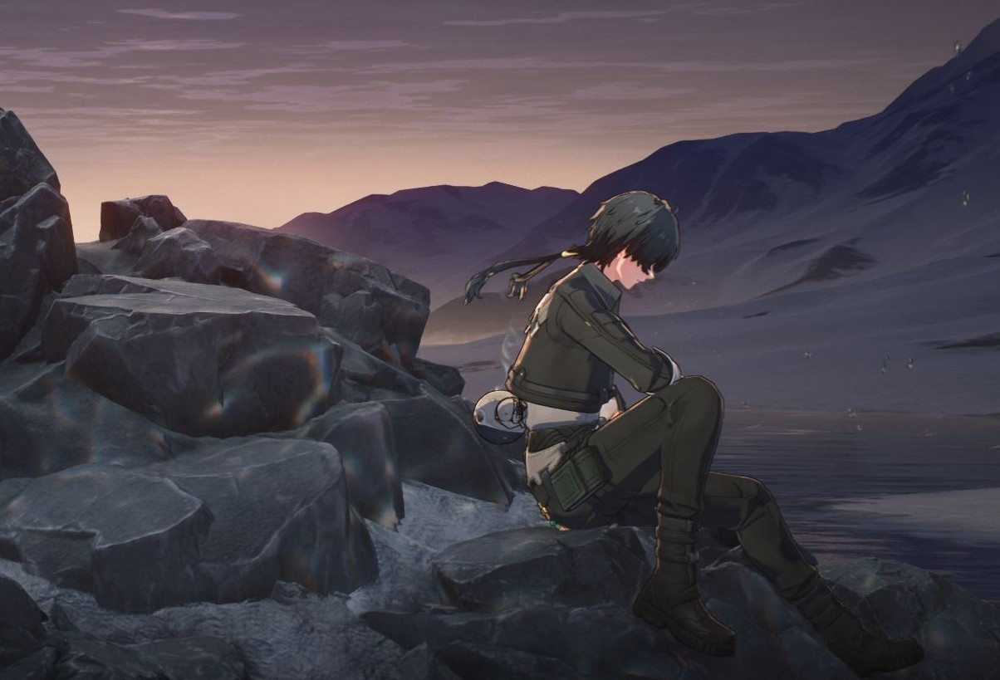

You must be impressed by the conditions and customs there!



Wuthering Waves brings you to travel across the Solaris world. You will encounter friends with different characters. As a rover whose memory has been rushed thousands of times, you seem to be predestined for saving the Solaris, meanwhile experiencing the process that civilisation here germinated, growed and evolved...
在索拉里斯的的荒野徜徉,寻一处静谧以抚慰那残破不堪的灵魂......
I will be there for everyone...As we head toward our shared future,leaving the past behind.
May I pray for anything specific for you? It would be my honor...I'm sure your wishes will come true.